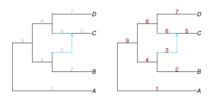
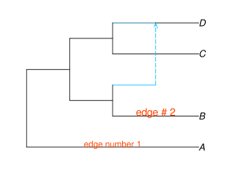
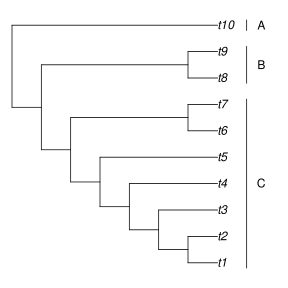

Adding data
In this section, we look over ways of adding extra information or data to a plot.
Adding labels
For demonstration purposes, we walk through the process of adding labels to edges, with notes on how to do the same for nodes in parentheses.
To add labels on edges (or nodes), we need to know their numbers. We can use the showedgenumber = true option for this. (Use shownodenumber = true to see node numbers).
plot(net, showedgenumber=true);
plot(net, showedgenumber=true, edgenumbercolor="red4");
Edge numbers are shown in grey by default (to avoid mistaking them for edge lengths), but their color can be adjusted as shown above.
We then need to define a DataFrame with two columns of information: the number of the edge (or node), and the label that goes on it, like this:
| number | label |
|---|---|
| 1 | "edge number 1" |
| 2 | "edge # 2" |
After including the DataFrames package, we can define it as so:
julia> using DataFramesjulia> DataFrame(number=[1,2], label=["edge number 1","edge # 2"])2×2 DataFrame Row │ number label │ Int64 String ─────┼─────────────────────── 1 │ 1 edge number 1 2 │ 2 edge # 2
Using this data frame as input to the edgelabel option (nodelabel for nodes) puts the text on the correct edges:
plot(net, edgelabel=DataFrame(number = [1,2],
label = ["edge number 1", "edge # 2"]),
edgelabelcolor="orangered", edgecex=[0.9,1.1]);
Adding other annotations using R
We can use the return values of plot to get information on the coordinates of different elements of the plot. Using this, we can add any other information we want.
The plot function returns the following named tuple:
(:xmin, :xmax, :ymin, :ymax,
:node_x, :node_y, :node_y_lo, :node_y_hi,
:edge_x_lo, :edge_x_hi, :edge_y_lo, :edge_y_hi,
:node_data, :edge_data)See the documentation for descriptions of these elements: plot
Side clade bars example
Here's example code that adds bars to denote clades in the margin:
net = readnewick("(((((((t1,t2),t3),t4),t5),(t6,t7)),(t8,t9)),t10);");
plot(net, xlim=(1,10))
using RCall # to send any R command, to make further plot modifications
R"segments"([9, 9, 9], [0.8, 7.8, 9.8], [9, 9, 9], [7.2, 9.2, 10.2])
R"text"([9.5, 9.5, 9.5], [4, 8.5, 10], ["C", "B", "A"])
Let's break this down step by step. First, we read the topology, and plot the graph normally. plot actually returns a value, from which we can get useful information. Below, we store the plot output in res, then check its first two values because they contain the default range of the x axis; xmin and xmax.
res = plot(net);
res[[:xmin,:xmax]](xmin = 0.29999999999999993, xmax = 8.77)Looking at xmin and xmax returned by default, we can see that the x range is about (0.3, 9). To give us extra space to work with, we can set xlim to (0.3,10), forcing the range to be wider on the right, for annotations. We can also see that in this case there is some extra white space on the left, so that we can increase xmin a little bit, finally settling on xlim=(1,10).
plot(net, xlim=(1, 10));Knowing the coordinates, we can now add more information to the plot through RCall. For this, I use the R functions segments and text to add side bars with text on them.
using RCall # add (install) the RCall package prior to 'using' it
R"segments"([9, 9, 9], [0.8, 7.8, 9.8], [9, 9, 9], [7.2, 9.2, 10.2])
R"text"([9.5, 9.5, 9.5], [4, 8.5, 10], ["C", "B", "A"])Beyond
To go beyond, we can access data on the node & edges to use them as we wish. We can access the coordinates of points & segments and more data like this:
julia> res[:node_x] # x coordinate. similarly try res[:node_y]19-element Vector{Float64}: 8.0 8.0 7.0 8.0 6.0 8.0 5.0 8.0 4.0 8.0 8.0 7.0 3.0 8.0 8.0 7.0 2.0 8.0 1.0julia> hcat(res[:node_y_lo], res[:node_y_hi])19×2 Matrix{Float64}: 1.0 1.0 2.0 2.0 1.0 2.0 3.0 3.0 1.5 3.0 4.0 4.0 2.25 4.0 5.0 5.0 3.125 5.0 6.0 6.0 7.0 7.0 6.0 7.0 4.0625 6.5 8.0 8.0 9.0 9.0 8.0 9.0 5.28125 8.5 10.0 10.0 6.89062 10.0julia> DataFrame(edge_x_lo=res[:edge_x_lo], edge_x_hi=res[:edge_x_hi], edge_y_lo=res[:edge_y_lo], edge_y_hi=res[:edge_y_hi])18×4 DataFrame Row │ edge_x_lo edge_x_hi edge_y_lo edge_y_hi │ Float64 Float64 Float64 Float64 ─────┼──────────────────────────────────────────── 1 │ 7.0 8.0 1.0 1.0 2 │ 7.0 8.0 2.0 2.0 3 │ 6.0 7.0 1.5 1.5 4 │ 6.0 8.0 3.0 3.0 5 │ 5.0 6.0 2.25 2.25 6 │ 5.0 8.0 4.0 4.0 7 │ 4.0 5.0 3.125 3.125 8 │ 4.0 8.0 5.0 5.0 ⋮ │ ⋮ ⋮ ⋮ ⋮ 12 │ 3.0 7.0 6.5 6.5 13 │ 2.0 3.0 5.28125 5.28125 14 │ 7.0 8.0 8.0 8.0 15 │ 7.0 8.0 9.0 9.0 16 │ 2.0 7.0 8.5 8.5 17 │ 1.0 2.0 6.89062 6.89062 18 │ 1.0 8.0 10.0 10.0 3 rows omittedjulia> res[:node_data]10×6 DataFrame Row │ name num lab lea x y │ String String String Bool Float64 Float64 ─────┼──────────────────────────────────────────────── 1 │ t1 1 #undef true 8.0 1.0 2 │ t2 2 #undef true 8.0 2.0 3 │ t3 3 #undef true 8.0 3.0 4 │ t4 4 #undef true 8.0 4.0 5 │ t5 5 #undef true 8.0 5.0 6 │ t6 6 #undef true 8.0 6.0 7 │ t7 7 #undef true 8.0 7.0 8 │ t8 8 #undef true 8.0 8.0 9 │ t9 9 #undef true 8.0 9.0 10 │ t10 10 #undef true 8.0 10.0julia> res[:edge_data]18×8 DataFrame Row │ len gam num lab hyb min x y │ String String String String Bool Bool Float64 Float64 ─────┼───────────────────────────────────────────────────────────────── 1 │ 1 1 #undef false false 7.5 1.0 2 │ 1 2 #undef false false 7.5 2.0 3 │ 1 3 #undef false false 6.5 1.5 4 │ 1 4 #undef false false 7.0 3.0 5 │ 1 5 #undef false false 5.5 2.25 6 │ 1 6 #undef false false 6.5 4.0 7 │ 1 7 #undef false false 4.5 3.125 8 │ 1 8 #undef false false 6.0 5.0 ⋮ │ ⋮ ⋮ ⋮ ⋮ ⋮ ⋮ ⋮ ⋮ 12 │ 1 12 #undef false false 5.0 6.5 13 │ 1 13 #undef false false 2.5 5.28125 14 │ 1 14 #undef false false 7.5 8.0 15 │ 1 15 #undef false false 7.5 9.0 16 │ 1 16 #undef false false 4.5 8.5 17 │ 1 17 #undef false false 1.5 6.89062 18 │ 1 18 #undef false false 4.5 10.0 3 rows omitted